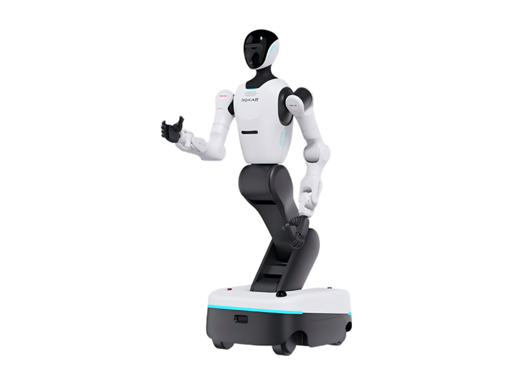

RokaeChina
Helios H2
- Announced
- Weight not stated
- Industry
- Research and development
VariantsH2-5H2-10
The manufacturer sells this model in several variants. The figures on this page apply to the variant the source names.
Key figures as stated by the manufacturer
2 of 6 stated · 4 gaps- Weight not statedA
- Payload, moving not statedA
- Runtime 240minWarning: load condition not statedA
- Max speed 5.4km/h3.36mphOur conversion from 5.4 km/h. The manufacturer does not state an imperial figure itself, so the conversion has no source of its own.A
- IP rating not statedA
- Indicative price not stated
How to read the figures
- 14kgA
- A superscript letter after a figure points to the source the figure came from. Robots with several sources carry several letters.
- Payload, moving
- A stroke before a field name means the figure carries a caveat that affects how it compares with other robots. The caveat is printed with the figure.
- 74.5lb
- Imperial figures are our own conversion unless the manufacturer states an imperial figure itself. The source letter always belongs to the metric figure — a conversion has no source of its own.
Deviations and variants in the key figures (6)
Weight
CaveatThe table gives 160 kg for the H2-5 and 180 kg for the H2-10.
Payload, moving
NoteThe table gives an arm load of 5 kg for the H2-5 and 10 kg for the H2-10. Those are arm-specific figures, not figures for what the whole robot can carry.
Runtime
CaveatListed as the battery runtime; no load is stated.
Max speed
NoteMaximum speed of the chassis.
IP rating
NoteNo ingress-protection rating is given on the page.
Indicative price
NoteNo price is given on the page.

Manufacturer's own photo.
Intended use, per the manufacturer
The manufacturer’s words
Widely used in industry for bin handling, complex material sorting and precision assembly, and meeting the needs of education, research and process development
Source: rokae.com · Retrieved
This category is not our assessment.
Every field in the schema
16 of 32 fields stated| Field | Value | Source and caveats |
|---|---|---|
| Physical | ||
| Weight | not stated | A CaveatThe table gives 160 kg for the H2-5 and 180 kg for the H2-10. |
| Length | 75cm29.5inOur conversion from 75 cm. The manufacturer does not state an imperial figure itself, so the conversion has no source of its own. | A NoteThe size row is labelled length, width and height and gives 750 x 650 x 1493 to 2000 mm. |
| Width | 65cm25.6inOur conversion from 65 cm. The manufacturer does not state an imperial figure itself, so the conversion has no source of its own. | A NoteThe size row is labelled length, width and height and gives 750 x 650 x 1493 to 2000 mm. |
| Height | 149.3–200cm58.8–78.7inOur conversion from 149.3–200 cm. The manufacturer does not state an imperial figure itself, so the conversion has no source of its own. | A NoteThe height is adjustable: the size row gives a range from the lowest to the highest position. |
| Degrees of freedom | 23DoF | A CaveatTotal of 23: neck 2, waist 2, arms 7 x 2, legs 2 and chassis 3. |
| Payload, moving | not stated | A NoteThe table gives an arm load of 5 kg for the H2-5 and 10 kg for the H2-10. Those are arm-specific figures, not figures for what the whole robot can carry. |
| Payload, standing | not stated | A NoteThe table gives an arm load of 5 kg for the H2-5 and 10 kg for the H2-10. Those are arm-specific figures, not figures for what the whole robot can carry. |
| Max speed | 5.4km/h3.36mphOur conversion from 5.4 km/h. The manufacturer does not state an imperial figure itself, so the conversion has no source of its own. | A NoteMaximum speed of the chassis. |
| Max slope | not stated | A NoteNo maximum incline is given on the page. |
| Single obstacle | not stated | A NoteNo obstacle height is given on the page. |
| IP rating | not stated | A NoteNo ingress-protection rating is given on the page. |
| Operating temperature, low | 0°C32°FOur conversion from 0 °C. The manufacturer does not state an imperial figure itself, so the conversion has no source of its own. | A NoteLower end of the operating environment; humidity 0% to 90% without condensation. |
| Operating temperature, high | 45°C113°FOur conversion from 45 °C. The manufacturer does not state an imperial figure itself, so the conversion has no source of its own. | A NoteUpper end of the operating environment; humidity 0% to 90% without condensation. |
| Power | ||
| Battery | not stated | A NoteThe table gives two 18 Ah batteries, 36 Ah in total; no watt-hour figure and no battery voltage are given. |
| Runtime | 240minWarning: load condition not stated | A CaveatListed as the battery runtime; no load is stated. |
| Hot-swap battery | not stated | A CaveatThe page lists direct charging, battery swapping and autonomous return to charge (with an optional charging pile); it does not say the robot stays powered during a swap. |
| Charge time | 120min | A CaveatGiven for a charge from 10% to 90%. |
| Docking station | yes | A CaveatThe page lists autonomous return to charge and says the charging pile is an optional extra. |
| Sensing and autonomy | ||
| LiDAR | 3D navigation LiDAR x2. | A NoteSensor row of the table. |
| Cameras | Head stereo camera x1. Optional: fisheye cameras x3, wrist stereo camera x1 and a wrist camera. | A NoteSensor row of the table. |
| Onboard compute | One of: NVIDIA Orin NX 8GB (117 TOPS), NVIDIA AGX Orin 64GB (275 TOPS) or NVIDIA Thor T5000 (2070 TFLOPS). | A NoteListed as a choice of one. |
| ROS 2 | yes | A NoteThe software row lists secondary development with ROS2 and a Python SDK. |
| SDK languages | Python | A NoteThe software row lists a Python SDK. |
| Autonomy level | not stated | A NoteThe page describes autonomous navigation and decision-making with laser SLAM and no named autonomy level. |
| Payload and expansion | ||
| Mounting interface | not stated | A NoteThe table lists an electric gripper, a dexterous hand and an electric suction cup as optional end effectors; no mounting interface is named. |
| Power out | not stated | A NoteNo power output is given on the page. |
| Data ports | HDMI USB 2.0 RJ45 | A NoteListed as debug ports. Wi-Fi, Bluetooth and optional 5G are listed separately. |
| Commercial | ||
| Indicative price | not stated | NoteNo price is given on the page. |
| EU | ||
| CE stated | not stated | A NoteNo certification is mentioned on the page. Records only what the manufacturer states regarding CE marking. |
| FCC stated | not stated | A NoteNo certification is mentioned on the page. |
| UL stated | not stated | A NoteNo certification is mentioned on the page. |
| CCC stated | not stated | A NoteNo certification is mentioned on the page. |
Stair step and payload each exist in two variants. Only compare fields with the same label.
Notes
- The producer's Chinese page calls the Helios series a wheeled humanoid robot (translated from the Chinese).
- The producer's English page calls the series "Wheeled Dual-Arm Robot Helios Series".
- The page offers a button to apply for a prototype unit (translated from the Chinese).
- The page footer names the company as Rokae (Beijing) Robotics Co., Ltd. (translated from the Chinese).
The manufacturer’s own page
The manufacturer’s original product page for this model.
Open the manufacturer’s page for Helios H2https://www.rokae.com/cn/product/show/583/%E8%BD%AE%E5%BC%8F%E5%8F%8C%E8%87%82%E6%9C%BA%E5%99%A8%E4%BA%BAHelios.html
Sources
- A Manufacturer product page. www.rokae.com/cn/product/show/583/%E8%BD%AE%E5%BC%8F%E5%8F%8C%E8%87%82%E6%9C%BA%E5%99%A8%E4%BA%BAHelios.html · Retrieved
One line per source, not per figure: a source has one retrieval date. The letter beside a figure points to the line it came from.